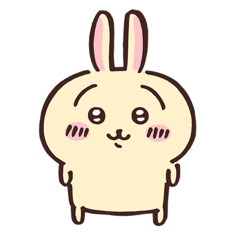
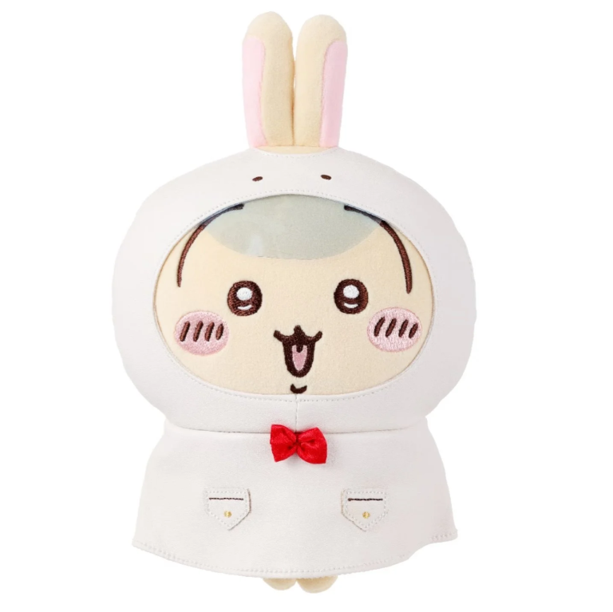
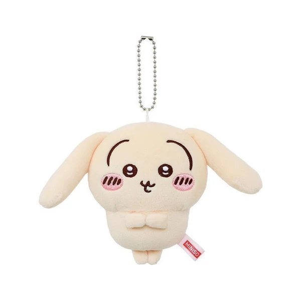
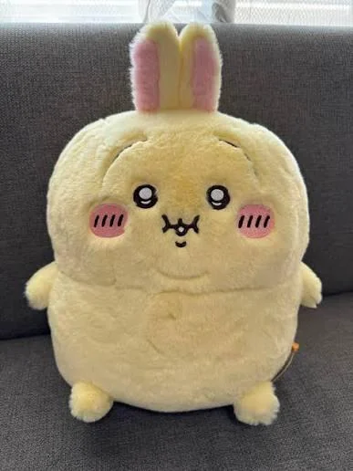
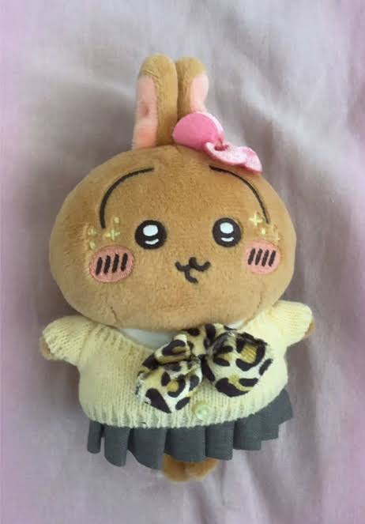
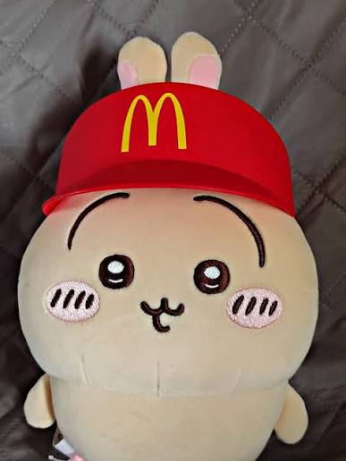
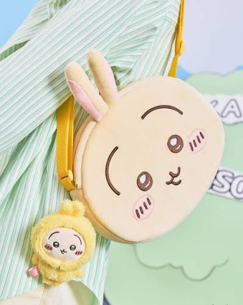
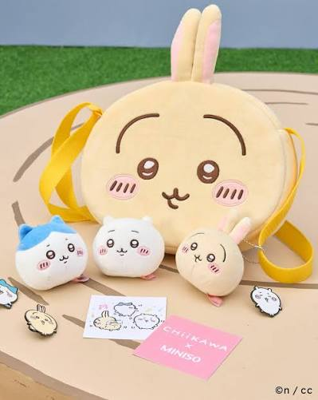
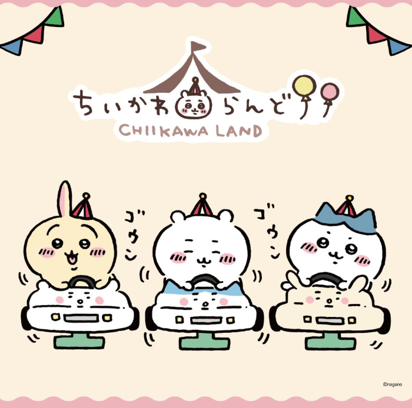

USAGI「うさぎ」Usagi is one of the main characters in the Chiikawa manga and anime series. In the Chiikawa-verse, they are best friends with Chiikawa and Hachiware, known for their energetic personality and playful antics during their time together. |
 |
| ABOUT | |
|
 |
Usagi「うさぎ」Usagi is known to enjoy teasing Chiikawa amongst other individuals. Sometimes, their provocations are not necessarily intentional or playful, as seen when they ignore Momonga's demands to leave their Magical Rice Cooker alone, angering the latter. |
FeaturesUsagi is a yellow rabbit with tall, upright ears. Their facial and body structure follow the same bipedal stance, beady eyes and pink blush that most other characters in Chiikawa have. Their unique facial features include long eyebrows that curve around their eyes. Usagi's eyes are smaller than of a regular chiikawas. Despite not having much variation in expression, another unique feature is their particularly accentuated bottom lip, which gives the impression of a pout. Usagi's weapon is a long yellow staff that shoots fireworks out of both ends. The weapon has a crudely drawn icon of Usagi's face on one end, meant to replicate the carved signature on weapons that belong to top ranked bug hunters. |
 |
Gallery     |
|
| CONTACT INFO & HOURS | |
|
 |
Location: Nagoya PARCO East Building, 3F |
|
USAGI うさぎ © This is a Footer. |